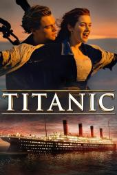

💗Elina is a huge movie lover. Here she ranks her ten favorite movies, hoping to recommend her favorites to as many people as possible💗
| Ranking | Movie's Name | Release Time | Director | Movie's Poster |
|---|---|---|---|---|
| 1 | The Shawshank Redemption | 1994 | Frank Darabont | |
| 2 | Roman Holiday | 1953 | William Wyler | |
| 3 | Titanic | 1997 | James Cameron |  |
| 4 | The Help | 2011 | Tate Taylor | |
| 5 | The Sound of Music | 1965 | Robert Wise | |
| 6 | La La Land | 2016 | Damien Chazelle | |
| 7 | Legally Blonde | 2001 | Robert Luketic | |
| 8 | The Great Gatsby | 2013 | Baz Luhrmann | |
| 9 | Breakfast at Tiffany's | 1961 | Blake Edwards | |
| 10 | The Pursuit of Happyness | 2006 | Gabriele Muccino | |